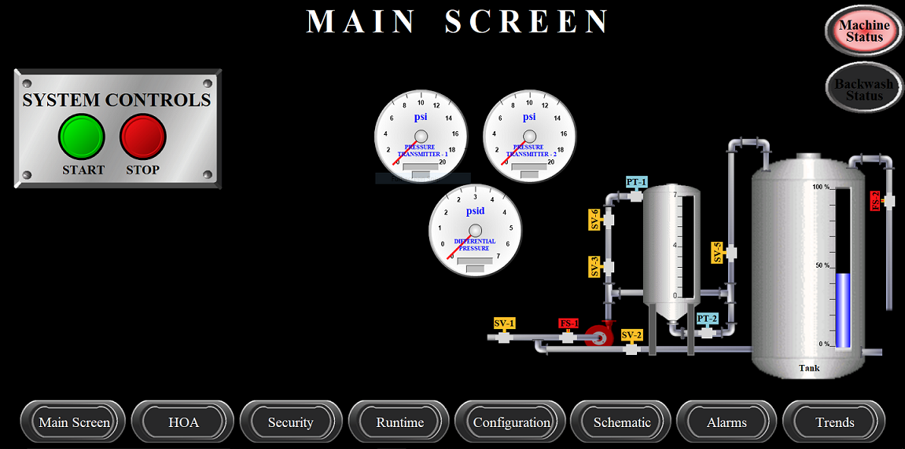
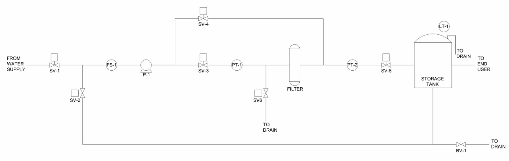
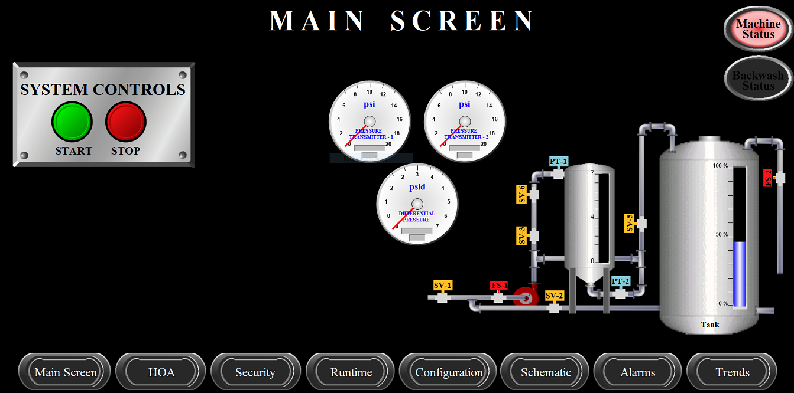
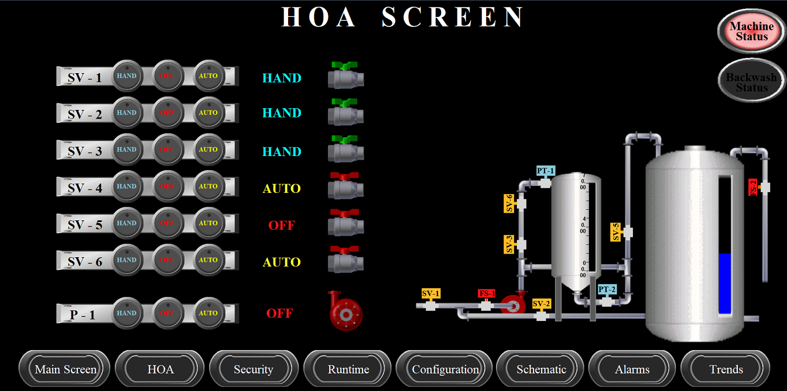
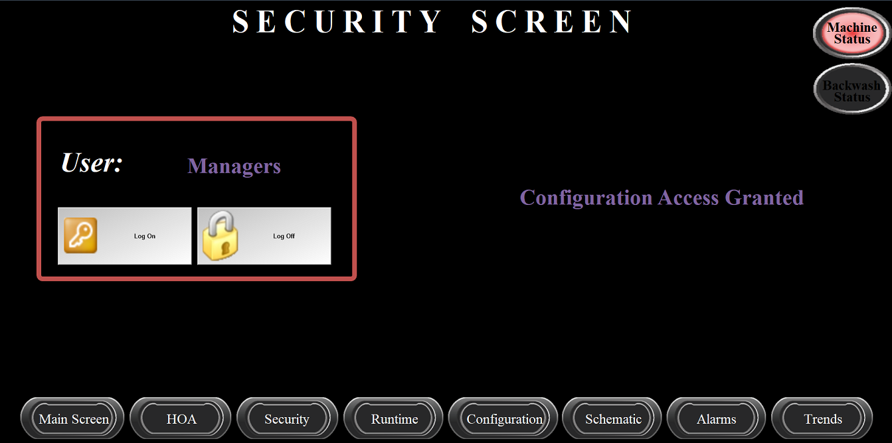
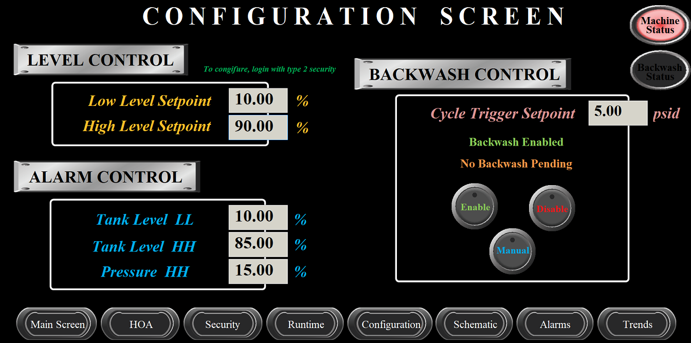
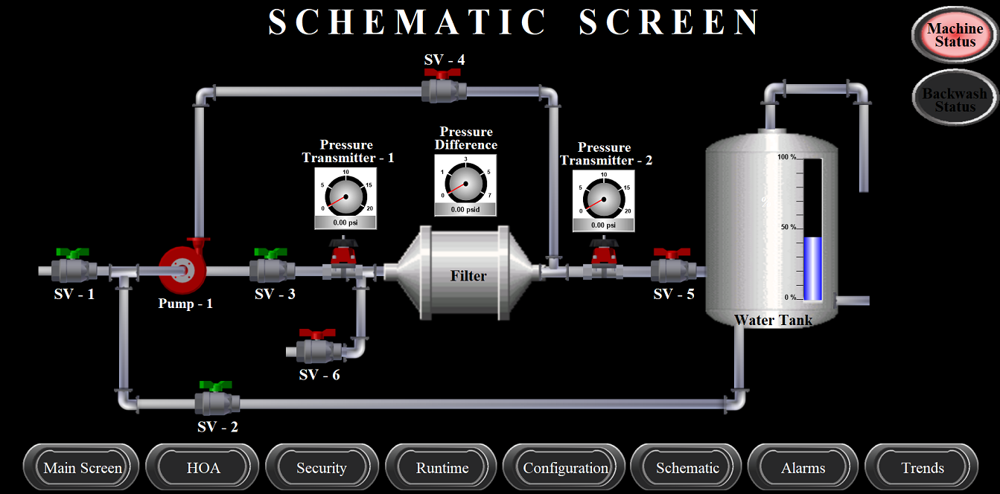
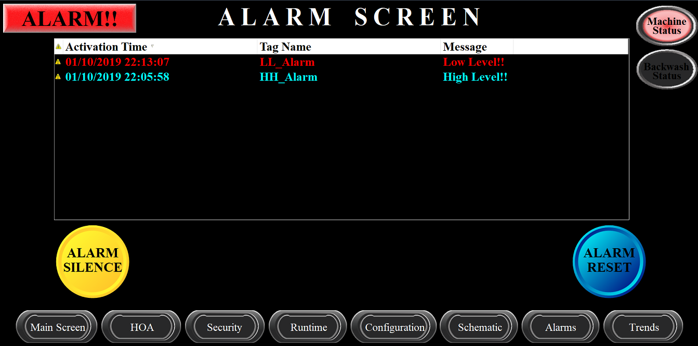
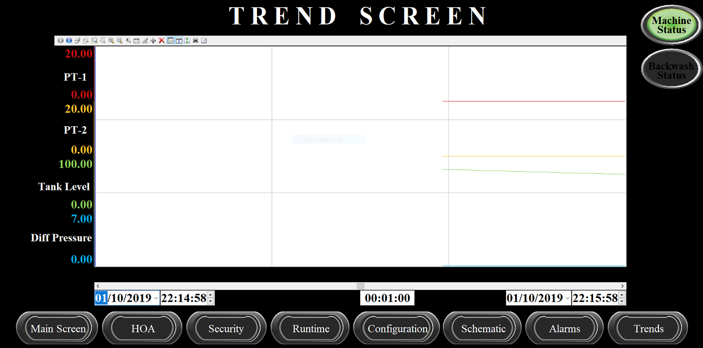
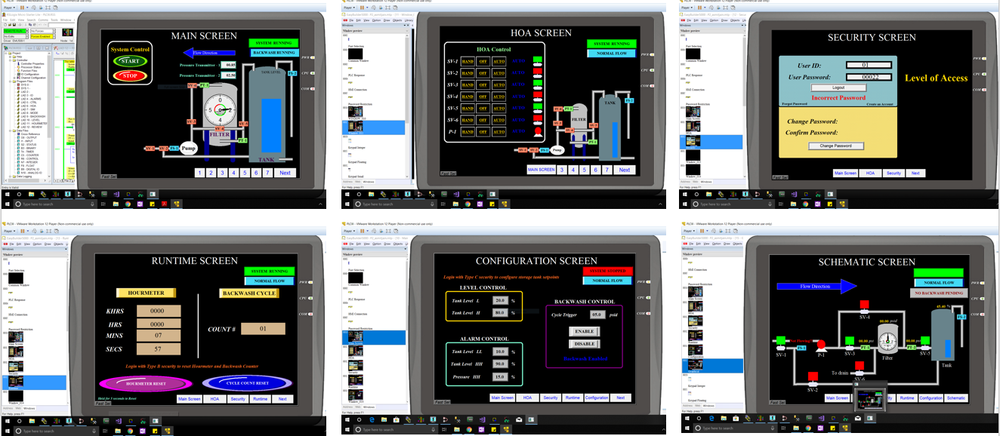

Project 4
Process Visualization with HMI/ SCADA Systems

MOTIVATIOIN:
After programming some complex PLC programs in Siemens & Allen-Bradley Rockwell Automation, I was determined to learn some HMI & SCADA
programming so that I can not only control the machines and equipment, but interact with them using a display. I created some
graphical interfaces which the operators can use to monitor automated process, establish operating parameters, and even
acquire and warehouse data from a running system.
SOFTWARE:
I got an opportunity to learn 5 different HMI software:
1. Wonderware (Schneider Electric / Indusoft) which is perhaps the top solution in the world of process visualization.
2. C-More
3. EasyBuilder 5000
4. AdvancedHMI
5. FactoryTalk View Studio
PROJECT DESCRIPTION:

Equipment: Here is the P&ID diagram which walk us through the complete intrumentation and inputs/ outputs. If we see from the left,
we have a infinite water supply. Then, we have a Solenoid Valve (SV) which will be controlled by PLC. In total, we have 6 SVs.
We will energize and deenergize the valves to open and close it. Then we have a Flow Switch (FS) which will be activated when the water flows through it. Pump (P) will be ON when energized and
OFF when deenergized. The next thing in this system is Pressure Transmitter (PT). It basically reads the pressure value and gives
analog value to PLC. The last thing we have is Level Transmitter (LT) which reads the value of the tank level. You might notice
that there is one last thing which I have not mentioned. It it is the Ball Valve (BV) which is manually controlled valve.
Working: Pump (P-1) will take the water from the reservoir through valve (SV-1). It will pass through a flow switch
(FS-1) which will protect our pump when there is no flow. This flow switch can be monitored by PLC. The water flows through other
valve and passes through two pressure transmitter via filter. If there is some resistance in the flow due to filter blockage, it
will go to the cleaning mode which will force water to flow backward through the filter. This backward flow will clean the filter
and will push the dirt to the drainage system. Now, back to the normal flow. If everything is good, the clean water will be collected in the tank so that people can use it.
There is thrid mode which will help us to clean the filter. In this, we will not take water from our reservoir, instead, we
will take clean water from the tank through SV-2. The water will pass through SV-4 and SV-6. Remaining all the valves will be
closed.
Wonderware (Schneider Electric / Indusoft):
This is my final project using Wonderware software. If you would like to see it working, please use the link below.
Main Screen: This page is used to turn ON/ OFF the water pumping system. You can have a basic understanding of the system
by looking at the main screen. I have provided pressure dials, an LED light for machine status and backwash status. At the bottom
of the page, you have all the navigation buttons. A small dynamic figure for the whole system can give you an idea about what all
valves and pumps are open/close. It also has a water level indicator.

Hand, Off, Auto Screen: This page of the HMI system can give you the access to different system modes. With the HAND
mode, we can manually control any SV and pump. This mode is basically used during the troubleshooting and maintainance work. If
we put the machine on the AUTO mode, it can run automatically. And the OFF mode can give access to switch individual equipment off.

Security Screen: This page helps you to give access to the restrited areas of the machine. If you don't won't anyone to
change the process parameters, you can lock the features. By this screen, put the ID & Password to have access to the restricted parameters.

Configuration Screen: This screen is used to change the process parameters. For example, low/high setpoint can be changed,
values to change the alarm setpoints. There are some backwash buttons too to maunally control it.

Schematic Screen: By this page, you can monitor the whole equipment. The valve handles, pump casing changes color based on
the mode. If it is OFF, it turns Red. And if it is running, it turns Green. You can also have access to pressure difference values.

Alarm Screen: To check the alarming issues, refer to this page. It will give you a list of the all alarms which occured during
the process. We can achknowledge and silence the alarm. It gives the complete time of occurance with message.

Trend Screen: To study the overall fluctuations & trends of different parameters, switch to this page. You can see how the machine
is performing, can have look at the past values of pressure, tank level, etc.

EasyBuilder 5000:
This is my final project using EasyBuilder software. If you would like to see it working, please use the link below.
